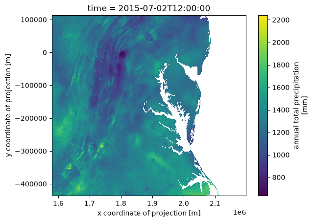

Acceso a datos de precipitación de DAYMET mediante OPeNDAP de NASA Earthdata en la nube#

Este conjunto de archivos proporciona resúmenes climáticos anuales derivados de datos diarios Daymet Version 4 R1 con resolución espacial de 1 km x 1 km para cinco variables Daymet: temperatura mínima y máxima, precipitación, presión de vapor y equivalente de agua de nieve. Se proporcionan promedios anuales para temperatura mínima y máxima, presión de vapor y equivalente de agua de nieve, y totales anuales para la variable de precipitación. Los archivos de climatología anual se derivan de los conjuntos de datos más grandes de parámetros meteorológicos diarios producidos en una malla de 1 km x 1 km para Norteamérica (incluyendo Canadá, Estados Unidos y México), Hawaii y Puerto Rico. Se proporcionan archivos anuales separados para las áreas terrestres de Norteamérica continental, Hawái y Puerto Rico. Fuente: NASA Earthdata.
Requisitos#
Autenticación EDL (usuario/contraseña)
python>=3.12
Objetivos#
Descarga un archivo remoto con (sub)selection#
a) Por variables
b) Por coordenadas geograficas
Descarga de múltiples archivos remotos#
A cada archivo se le aplica la subseleccion de una subregion de datos de interes antes de descargar.
Referencias#
Thornton, M. M., Shrestha, R., Wei, Y., Thornton, P. E., & Kao, S.-C. (2022). Daymet: Annual Climate Summaries on a 1-km Grid for North America, Version 4 R1 (Version 4.1). ORNL Distributed Active Archive Center. https://doi.org/10.3334/ORNLDAAC/2130
import xarray as xr
import datetime as dt
import earthaccess
import numpy as np
# import pydap-specific tools
from pydap.client import get_cmr_urls, open_url
from pydap.net import create_session
from pydap.client import to_netcdf as dap_to_netcdf
Autenticación EDL mediante earthaccess y OPeNDAP#
Puedes autenticarte mediante earthaccess como se muestra a continuacion. Debes tener una cuenta EDL válida. Hay dos estrategias para autenticarte con earthaccess:
strategy="interactive". Esto pedirá tu usuario y contraseña de EDL.strategy="netrc". Usa esta opción si el notebook se ejecuta en un entorno donde se puede recuperar un.netrccon tus credenciales.
A continuación, el valor predeterminado será netrc, asumiendo que el usuario ejecutó el notebook Authenticate.ipynb. Si no es así, puedes cambiar la estrategia a "interactive".
from earthaccess.exceptions import LoginStrategyUnavailable
try:
auth = earthaccess.login(strategy="netrc", persist=True) # you will be promted to add your EDL credentials
except LoginStrategyUnavailable:
auth = earthaccess.login(strategy="interactive", persist=True)
# pass Token Authorization to a new Session.
my_session = create_session(auth.get_session())
Como encontrar URLs de OPeNDAP#
Usando la API CMR de NASA#
Consultamos el Common Metadata Repository (CMR por sus siglas en ingles) de la NASA. La busqueda debe incluir:
Concept collection ID de interés.
Rango temporal de interés (para filtrar entre todos los resultados posibles).
daymet_ccid = "C2531982907-ORNL_CLOUD" #
time_range = [dt.datetime(2014, 5, 15), dt.datetime(2024, 5, 15)]
cmr_urls = get_cmr_urls(ccid=daymet_ccid, time_range=time_range, limit=1000) # you can incread the limit of results
print("################################################ \n We found a total of ", len(cmr_urls), "OPeNDAP URLS!!!\n################################################")
################################################
We found a total of 165 OPeNDAP URLS!!!
################################################
Filtrado adicional#
CMR devuelve todas las URLs de precipitation de DAYMET. Sin embargo, estas se dividen además en tres regiones:
Hawaii
Puerto Rico
Norteamérica (Estados Unidos continental).
Necesitamos filtrar más estas URLs opendap para conservar solo las variables de interés. En este tutorial solo nos interesa: Continental US; por lo tanto, necesitamos seleccionar solo las URLs que terminan con
Daymet_Annual_V4R1.daymet_v4_prcp_annttl_na_
# filter url to only retain Annual Precip for North America
prcp_na_urls = [url for url in cmr_urls if url.split(".nc")[0].split("Daymet_Annual_V4R1.daymet_v4_")[-1].startswith("prcp_annttl_na")]
prcp_na_urls[:5]
['https://opendap.earthdata.nasa.gov/collections/C2531982907-ORNL_CLOUD/granules/Daymet_Annual_V4R1.daymet_v4_prcp_annttl_na_2014.nc',
'https://opendap.earthdata.nasa.gov/collections/C2531982907-ORNL_CLOUD/granules/Daymet_Annual_V4R1.daymet_v4_prcp_annttl_na_2015.nc',
'https://opendap.earthdata.nasa.gov/collections/C2531982907-ORNL_CLOUD/granules/Daymet_Annual_V4R1.daymet_v4_prcp_annttl_na_2016.nc',
'https://opendap.earthdata.nasa.gov/collections/C2531982907-ORNL_CLOUD/granules/Daymet_Annual_V4R1.daymet_v4_prcp_annttl_na_2017.nc',
'https://opendap.earthdata.nasa.gov/collections/C2531982907-ORNL_CLOUD/granules/Daymet_Annual_V4R1.daymet_v4_prcp_annttl_na_2018.nc']
Acceso solo a metadatos con PyDAP#
Podemos acceder a metadatos producidos por OPeNDAP para identificar las variables de interés. En particular, aquellas asociadas con valores de latitud y longitud.
pyds = open_url(prcp_na_urls[0], protocol="dap4", session=my_session, batch=True)
pyds.tree()
.daymet_v4_prcp_annttl_na_2014.nc
├──y
├──lon
├──x
├──time
├──lat
├──prcp
├──time_bnds
└──lambert_conformal_conic
Subconjunto espacial#
Nos interesa un área geográfica centrada alrededor del MidAtlantic (US), definida por la caja delimitadora
bounding-box = [36.5, -80.3, 40.5, -74] # Follows the format: [South, West, North, East]
lon_min, lon_max = -80.3, -74
lat_min, lat_max = 36.5, 40.5
Usar PyDAP para descargar datos de un archivo#
En el presente caso de datos Nivel 3, para identificar el subconjunto que define nuestra área de interés, es suficiente descargar los datos de coordenadas desde un solo archivo remoto. Abajo usamos PyDAP para hacerlo.
%time
lon = pyds['lon'][:].data
lat = pyds["lat"][:].data
CPU times: user 1 μs, sys: 0 ns, total: 1 μs
Wall time: 3.81 μs
%%time
lon, lat = np.asarray(lon), np.asarray(lat)
CPU times: user 10 s, sys: 2.47 s, total: 12.5 s
Wall time: 48.2 s
print("######################################## \n longitude array size:", lon.shape, "\n ########################################")
########################################
longitude array size: (8075, 7814)
########################################
print("######################################## \n latitude array size:", lat.shape, "\n ########################################")
########################################
latitude array size: (8075, 7814)
########################################
Encontrar los índices que definen el área de interés#
# 1) points that fall inside your lat/lon box
mask = (
(lon >= lon_min) & (lon <= lon_max) &
(lat >= lat_min) & (lat <= lat_max)
)
rows, cols = np.where(mask)
# indexes below
y0, y1 = rows.min(), rows.max()
x0, x1 = cols.min(), cols.max()
Comprobar que estos valores son razonables#
print(f"#################################################################################### \n Data download will span longitude values: [{lon[y0:y1,x0:x1].ravel().min()}" + ", " + f"{lon[y0:y1,x0:x1].ravel().max()}] \n####################################################################################" )
####################################################################################
Data download will span longitude values: [-81.41896057128906, -72.49678802490234]
####################################################################################
print(f"#################################################################################### \n Data download will span latitude values: [{lat[y0:y1,x0:x1].ravel().min()}" + ", " + f"{lat[y0:y1,x0:x1].ravel().max()}] \n ####################################################################################" )
####################################################################################
Data download will span latitude values: [35.210548400878906, 41.76029968261719]
####################################################################################
Definir parámetros específicos de pydap#
Estos son necesarios para:
Subselecionar cerca de los datos remotos (de modo que solo se descarguen los datos de interés)
Definir dónde almacenar datos en el entorno local
De forma predeterminada, si no se define ningún parámetro, se descargará todo el conjunto de datos y se colocará en el directorio actual.
dim_slices = {'/y':(y0,y1), '/x': (x0,x1)} # defines index to subset format: (first, last)
keep_vars = ["/time", "/y", "/x", "/lon", "/lat", "/prcp"] # variables to download
output_path = "data"
Descarga y deserializacion de datos#
Pydap almacenará cada archivo remoto en su propio archivo individual (cada archivo tendrá el mismo nombre que el archivo fuente), en lugar de agregar todos los datos. Esto es considerablemente más seguro (ya que no todos los datos pueden agregarse en un solo datacube) y habilita paralelismo.
%%time
dap_to_netcdf(prcp_na_urls, session=my_session, output_path = output_path, dim_slices=dim_slices, keep_variables=keep_vars)
CPU times: user 88.4 ms, sys: 111 ms, total: 199 ms
Wall time: 10.8 s
Inspeccionar datos localmente#
Una vez en tu sistema local, puedes agregar los archivos si es necesario. En este caso todos los datos se pueden agregar, y es considerablemente más fácil agregarlos localmente que remotamente.
%%time
ds = xr.open_mfdataset("data/daymet_v4_prcp_annttl_na*", parallel=True, concat_dim='time', combine='nested')
CPU times: user 570 ms, sys: 153 ms, total: 723 ms
Wall time: 661 ms
ds['prcp'].isel(time=1).plot()
<matplotlib.collections.QuadMesh at 0x31a1d8830>
